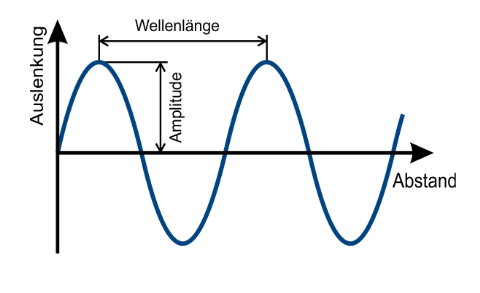

1011 0111
| 1 | 0 | 1 | 1 | 0 | 1 | 1 | 1 |
|---|---|---|---|---|---|---|---|
| 1 * 2^7 | 0 * 2^6 | 1 * 2^5 | 1 * 2^4 | 0 * 2^3 | 1 * 2^2 | 1 * 2^1 | 1 * 2^0 |
| +128 | +32 | +16 | +4 | +2 | +1 | ||
| 183 | 55 | 23 | 7 | 3 | 1 |
Least-Significant-Bit [LSB] = Der "rechteste", niedrigste Bit
Most-Significant-Bit [MSB] = Der "linkeste", höchste Bit
der LSB fängt bei 2^0 an
der maximal Wert einer Bitfolge (alle Bits sind True) liegt bei:
(2^n) -1
[n = Anzahl der Bitsellen]
wobei n = Anzahl der Bitstellen
0x ist ein üblicher Prefix für eine Hexadezimalzahl
HEXADEZIMAL (von griech. hexa „sechs“ und lat. decem „zehn“)
Eine Hexadezimalstelle kann durch 16 Symbole repräsentiert werden
0 1 2 3 4 5 6 7 8 9 A B C D E F
Somit kann eine Hexadezimalstelle 4 Bits / 1 Byte darstellen
AAB(16) in eine Dezimalzahl umwandeln
1010 1010 1011
2731
umwandeln
189(10) : 16
11 REST 13
ZWEIERKOMPLEMENT für negation
maximum integer wird um ein Bit kleiner, von ((2^32) -1) zu ((2^31) -1)
deswegen FFFF = -1
Video schauen!
Divisonrestverfahren mit 2.
Reste in umgekehrter Reihenfolge ergeben Binärzahl
53
26 R 1
13 R 0
6 R 1
3 R 0
1 R 1
0 R 1
--> 110101
UNSIGNED:
0 bis (2^32)-1
SIGNED:
-(2^(32-1)) bis (2^(32-1))-1
UNSIGNED:
0 bis (2^16)-1
SIGNED:
-(2^(16-1)) bis (2^(16-1))-1
UNSIGNED:
0 bis (2^64)-1
SIGNED:
-(2^(64-1)) bis (2^(64-1))-1
der MSB wird zum Vorzeichen, bzw. zur negativen Zahl.
dadurch fällit bei den positiven Werten ein Bit weg, das positive Maximum verringert sich um eine Potenz.
Das Maximum liegt nun bei 2^(n-1) -1
Das Minimum liegt bei -(2^(n-1))
die negativen Werte in einem Zweierkomplement sind sehr von n abängig
um eine Zahl zu invertieren, einfach Bits invertieren und mit 1 addieren.
24 zu -24
24 = 0001 1000
1110 0111 +
0000 0001
-> 1110 1000
Es gibt 16 binäre Operatoren (and, or, nor, nand, identität, nand, xor, nxor)
| Kodierung | Bit/Zeichen | Typ |
|---|---|---|
| MorseCode | ~5 | variable Codelänge |
| ASCII | 7 | fest |
| ANSI | 8 | fest |
| win1252 | 8 | fest |
| Unicode | 17x16 / 24 bits pro Zeichen? | |
| UTF-8 | 8/16/24/32 | variable Codelänge |
| UTF-16 | 16/32/48 | variable Codelänge |
ASCII ist ein 7-bit-Code (--> 128 Zeichen im ASCII Alphabet), gibt aber bessere Formate mittlerweile
A = 1000001(^2) = 65(^10)
dann gab es ANSI und viel durcheinander
Dann kam UNICODE
fileformat.info
UTF-8 ist ein Teil des Unicodes und ein guter Kompromiss
ASCII (und Unicode I assume?) hat eine feste Codelänge
Datenmenge >= Informationsmenge (Informationsmenge)
Zeil ist die Vermittlung von möglichst großer Informationsmenger bei geringer Datenmenge
Zeichen
-> abstrakte Einheit einer Schrift mit spezifischer Bedeutung
Darstellung
-> visuelle oder grafische Darstellung eines Zeichens
Glyph
-> konkrete Schriftart und grafische Darstellung eines Zeichens
Farbtiefen von 24bit (8 Bit pro Farbe) oder 32bit (rgba) üblich.
Größe (in Bits) = Anzahl_Pixel × Farbtiefe(in Bit)
zur Umrechnung in Byte durch 8 teilen
24bit Farbtiefe üblich:
8 Bits / 2 Byte für jeweils [Rot, Grün, Blau]
rbg(255, 0, 97)
#FF0061
Anzahl der dadurch darstellbaren Farben pro Pixel:
2^24 = 256^3 = >16 Millionen
Mit Alphakanal kann es zu einem 32bit Farbtiefe kommen
Für die jeweilige Komplementärfarbe einfach den aktuellen Wert jeder Farbe vom maximalen Wert jeder Farbe subtrahieren.
rgb(40, 190, 55)
rgb(215, 65, 200)
Bitmapverfahren / Rastergrafiken
wichtige Dateitypen für Rastergrafiken:
JPEG/JPG/JPG2000
PNG (+alphachannel)
BMP ("Windows Bitmap")
TIFF (+alphachannel +layer, insgesamt sehr komplexes Format)
Vektorgrafiken
.svg
mathematische Koordinaten, Pfade und Farben statt Pixelinformationen
Vektorgrafiken dadurch kleiner und unendlich skalierbar, da es kein natürliches Pixelende und somit kein Qualitätsverlust gibt.
Geeignet für Logos, Symbole, Illustrationen und allgemein Grafiken, bei welchem die Skalierbarkeit relevant ist.

Amplitude = Ausschlag nach oben und unten
--> sagt was über die Lautstärke eines Tones aus.
Wellenlänge (auch Lambda λ) ist die räumliche Länge einer vollständigen Schwingung, gemessen in Metern.
Freqenz und Wellenlänge stehen in einer inversen Beziehung
Frequenz ist wie häufig etwas passiert (Dichte)
Einheit: Hertz
1 Hz = 1/Sekunde
Geschwindigkeit des Signals
Frequenz × Wellenlänge
v = f × λ
Aufgrund der inversen Beziehung zwischen Frequenz und Wellenlänge liegt die Geschwindigkeit immer grob bei 343m/s (physikalische Schallgeschwindigkeit)
Kammerton a' hat eine Frequenz von 440 Hz
Eine Oktave ist die Verdopplung der Frequenz
Menschliche Range: von 20Hz bis 20khHz
Strom = 50Hz
mögliche Frage: Wieviele Töne A kann man hören?
wir können den Ursprung eines Tons lokalisieren, weil wir zwei Ohren haben
Sprache liegt bei etwa unter 1kHz
440, 220, 110, 55, 27, 880, 1760, 3520, 7040, 14080
--> 10 Töne A
Die Geschwindigkeit ist ja mit 343m/s physikalisch Vorgegeben!
Lösung:
Geschwindigkeit = Frequenz × Wellenlänge
343m/s = 440hz × Wellenlänge(m) | /440
0,779m = Wellenlänge
Abtastrate (Sampling Rate) = Anzahl der Messungen pro Sekunde (Hz)
Die Abtastrate muss mindestens doppelt so groß sein wie die Frequenz, deshalb ist 44kHz eine übliche Abtastrate. [20kHz × 2 + 10%]
Abtasttiefe = Wert der Amplitude eines jeden Abtastwertes in BIT. Mittlerweile 16bit Pro Kanal üblich
Damalige CD:
44000 Hz Abtastrate
16bit Abtasttiefe
2 Kanäle (Stereo)
Alles mit Audiolänge in Sekunden multiplizieren um Speicherplatz zu bekommen:
Größe von eine Stunde Audio auf CD:
Größe in Bit = 44000 × 16bit × 2 Kanäle × 3600Sekunden
44000 × 16 × 2 × 3600 Byte
-> 5.068.800.000 Bit / 8
-> 633.600.000 Byte / 1024
-> 618.750 KiB / 1024
~ 604 MiB
zuerst zu gewissen Abständen messen
Pulse Code Modulation (PCM Verfahren)
Signal zu unterschiedlichen (zufälligen) Zeiten messen (Abtastrate)
Abtastrate in Hz, Abtasttiefe in bit
Dann Messwert in eine Skala beokmmen
Y-Achse in acht Bereiche aufteilen (Die kann man mit 3 Bit darstellen)
Bitrate pro Sekunde
(diese) Digitalisierung ist nur eine Annäherung an den originalen Ton
Man muss einen Ton mindestens mit der doppelten Frequenz abtasten
weil wir etwa 20.000 hören, landen wir bei 40.000 + 10% = Abtasterate von 44kHz und Abtasttiefe von 16 bit bei einer CD!
außerdem Stereo also 2 Kanäle
| Dezimalpräfix | Abk. | Binärpräfix | Abk. | |||||
|---|---|---|---|---|---|---|---|---|
| Kilo | kB | 1.000 | 10^3 | | | Kibi | KiB | 1024 | 2^10 |
| Mega | MB | 1.000.000 | 10^6 | | | Mebi | MiB | 1.048.576 | 2^20 |
| Giga | GB | 1.000.000.000 | 10^9 | | | Gibi | GiB | 1.073.741.824 | 2^30 |
| Tera | TB | 1.000.000.000.000 | 10^12 | | | Tebi | TiB | 1.099.511.627.776 | 2^40 |
| Peta | PB | ... | 10^15 | | | Pebi | PiB | ... | 2^50 |
| Exa | EB | ... | 10^18 | | | Exbi | EiB | ... | 2^60 |
Potenzen einfach addieren.
Kilo × Giga
10^3 × 10^9 = 10^3+9 = 10^12
--> Tera
Potenzen einfach subtrahieren
Peta / Giga
10^15 / 10^9 = 10^15-9 = 10^6
--> Mega
python Äquivalent
x: list = [1, 4]
verschieden möglichkeiten des Speicherns:
sequentielle Allokation, bei x anfangen und x+m, bei int ist m=4, weil int = 32 bit = 4 byte
schlecht für utf-8
[oft als array]
verkettete Allokation
hier bestehen die Daten aus Data UND einen Pointer welche auf das nächste Element der Liste zeigt. (Speicherintensiver)
Wert mitten in eine Liste einfügen oder löschen ist beispielsweise viel schneller, weil man nur die Verweise/Addressen ändern muss.
[oft als list, link]
Effizienz mit Ordnungs O
meisten systeme und Sprache benutzen beides irgendwie, beide haben Vor- und Nachteile
Elemente werden gemäß der abgelegten Reihenfolge wieder entnommen.
FIFO
first in, first out
werte werden in umgekehrter Reihenfolge, wie sie abgelegt wurden, entnommen
in der Lagerung häufig
push, pop, top
LIFO
Last in, first out.
graph besteht aus Knoten und Kanten
ein tree ist zusammenhängender und azyklischer (kein Kreis) Graph!
ein forest ist eine Ansammlung von trees
rooted tree
Record ist abgegrenzt und definiert durch seinen gesetztlichen und beruflichen Wert. [Arbeitsvertrag, Patente aldskjfslkdajf]
Konflikt zwischen Aufbewahrungspflicht und Datenschutz. Für den Datenschutz müssen Records bei Nichtbenutzung relativ schnell vernichtet werden, doch gleichzeitig müssen diese logischerweise für die inhaltliche Auseinandersetzung aufbewahrt werden. [Bewerbung wird erhalten, weitergeleitet, gelesen (genutzt), vernichtet --> Workflow]
beschreibt die Phasen von Erstellung bis zur Vernichtung eines Dokumentes
"Cycle" oder "Kreislauf" könnte hier ein bisschen irreführend verstanden werden, da dieses Dokument ja nicht "von vorne" die Schritte erneut erfährt.
Gibt kein richtiges DLC Modell, kommt auf die Anwendung an.
Standard Generalized Markup Language [SGML] = Metasprache zur Definition von Markup Languages
Fokus auf Einfachheit und das WWW
feste, nicht veränderbare SGML-Deklaration.
Abwandlung von HTML auf Basis von XML
Auszeichnungssprachen folgen einer Trennung von
1. Dokumentstruktur
- Hierarchie und Verschachtelungen (z.bsp der Tags)
1. Dokumentinhalt
- Eigentlicher inhaltlicher Text
2. Dokumentdarstellung bzw. Layout
- Font, Farbe, Alignments, ...
-> Dadurch:
Eliminierung von Redundanzen
einfache maschinelle Analysen möglich
DMS - Information so erhalten wie wir sie reingespielt haben.
Das muss oder soll bei einem CMS gar nicht der Fall sein.
Verwaltung von Dokumenten über gesamten lebenszyklus.
Oft im Unternehmenskontext, oft mit records.
Versioncontrol / Versionsmanagement
OCR *(Optical Character Recognition) *
Bild in lesbaren Text umwandeln. Eingescannte PDFs beinhalten beispielsweise offensichtlich keinen Text.
DMS-Systeme machen das häufig automatisch, und das funktioniert offenbar relativ gut, trotzdem natürlich fehleranfällig.
Anbieter:
Open-Source:
- WordPress [startet eigentlich für Blogs, mittlerweile WCMS], Joomla!, Drupal, Typo3, ...
- können vollständig individuell angespasst und weiterentwickelt werden
Closed-Source:
-PANSITE (Kommunen), Imperia (Hochschulen), ....
Branchen- / Individuallösungen (im Auftrag entwickelt):
- speziell für einzelne Einrichtungen / Firmen nach den dortigen individuellen Anforderungen entwickelt
- sind nicht immer auf dem freien Markt erhältlich
Pfade (absolut und relativ)
Redundanz: Navigationsblöcke, grober Aufbau etc... muss in jeder HTML Datei wiederholt werden. Es gibt keine "Templates".
Dateien werden lokal erzeugt, sodass HTML CSS Kenntnisse vorrausgesetzt sind.
keine Trennung zwischen Inhalt, Gestaltung und funktionaler Aspekte --> Redundanz
Viel Handarbeit / Keine Automatismen (beispielsweise Veröffentlichung zu einem besitmmten Zeitpunkt oder Gefahr toter Links)
Was ist eigentlich ein Dokument?
drei wesentliche Punkte: Layout, Inhalt, Struktur
Contentmanagementsystem = redaktionelle Prozesse unterstützen
in dem Kontext Management = Verwaltung, Elektronischer Archivierung / Schriftgutverwaltung / Records Management.
Kein klarer einheitlicher Begriff.
Definitorische Trennschärfe bei Record und Document
Datensicherheit != Datenschutz
Record ist abgegrenzt und definiert durch seinen gesetztlichen und beruflichen Wert. [Arbeitsvertrag, Patente aldskjfslkdajf]
Konflikt zwischen Aufbewahrungspflicht und Datenschutz. Für den Datenschutz müssen Records bei Nichtbenutzung relativ schnell vernichtet werden, doch gleichzeitig müssen diese logischerweise für die inhaltliche Auseinandersetzung aufbewahrt werden. [Bewerbung wird erhalten, weitergeleitet, gelesen (genutzt), vernichtet --> Workflow]
RegEx geiles cheat sheet von Microsoft:
https://download.microsoft.com/download/D/2/4/D240EBF6-A9BA-4E4F-A63F-AEB6DA0B921C/Regular%20expressions%20quick%20reference.pdf
https://regexr.com/
regex ist powerful af und schnell af
Beispielfrage:
a=3+7b
Syntaxbaum erstellen
Syntxbäume
Suchbäume
???
Enterprise Content Management (ECM) als Überbegriff für alles
DMS = Dokument-Management-System
CMS = Content-Management-System
Webseite / Webpage = einzelne HTML-Datei
Website = Internetpräsenz bestehend aus allen zugehörigen einzelnen Webseiten
Homepage = Startseite der Website, erste Website. Erreichbar durch Eingabe des Domainnamens ohne weitere Pfadangaben.
Hyperlink: Verbindung zwischen Webseiten (interne und externe Hyperlinks)
DMS - Information so erhalten wie wir sie reingespielt haben.
Das muss oder soll bei einem CMS gar nicht der Fall sein.
Probleme beim Erstellen von Websiten ohne CMS
Pfade (absolut und relativ)
Redundanz: Navigationsblöcke, grober Aufbau etc... muss in jeder HTML Datei wiederholt werden. Es gibt keine "Templates".
Dateien werden lokal erzeugt, sodass HTML CSS Kenntnisse vorrausgesetzt sind.
keine Trennung zwischen Inhalt, Gestaltung und funktionaler Aspekte --> Redundanz
Viel Handarbeit / Keine Automatismen (beispielsweise Veröffentlichung zu einem besitmmten Zeitpunkt oder Gefahr toter Links)
HTML Datei wird erst bei Aufruf generiert und aus vielen Quellen zusammengesetzt (templates)
dadurch entsteht inhaltlicher, gestalterische und funkntionale Trennung
Designvorlagen im WCMS sind nicht standardisiert
Open-Source:
- WordPress [startet eigentlich für Block, mittlerweile WCMS], Joomla!, Drupal, Typo3, ...
- können vollständig individuell angespasst und weiterentwickelt werden
Closed-Source:
-PNSITE (Kommunen), Imperia (Hochschulen), ....
können nur in Grenzen (z.B. Design) angepasst und weiterwntwickelt werden
Branchen- / Individuallösungen (im Auftrag entwickelt):
- speziell für einzelne Einrichtungen / Firmen nach den dortigen individuellen Anforderungen entwickelt
- sind nicht immer auf dem freien Markt erhältlich
Ursprünglich für privaten Gebrauch für Webblogs oder so ein Scheiß keine Ahnung
eigentlich Anzeige von Beiträgen in chronologischer Reihenfolge
Inhalte waren vom gestalterischen getrennt, es gibt Designvorlagen, themes
von Community erweitert, Plugins
whack af
ich will sterben
Designänderungen an zentraler Stelle
Änderungen lassen sich nachvollziehen
Freigabeprozesse
Zeitgesteuerte Prozesse
Komfortfunktionen (tote Links entfernen)
einfache Bildbearbeitungsfunktionen
Merkmal:
- Strukturinformation werden in den eigentlichen Inhalt integriert. Struktur und Inhalt werden kombiniert.
- Metasprache
Forderungen:
- Syntax und Semantik muss definiert sein
- von Menschen schreib- und lesbar
- einbettbar in Programmiersprachen
- erweiterbar hinsichtlich neuer Struktur elemente und Dokumententypen
- offen für zukünftige Entwicklungen: neue Medientypen, Medienintegration
bitmap
RGB pro pixel, ein Byte pro Farbe, drei Bytes
Pointer zeigt auf eine Adresse im Speicher
Index fangen ja bei 0 an!!!!
liste mit listen ist im Grunde eine Liste mit Pointern. (nested list)
ein computer besteht aus drei Zentralen Komponenten:
CPU
RAM, aufteilt in Zellen und jeder hat eine Addresse. (durchnummeriert?)
Mit Addresse kann man auf Speicherelemente zugreifen.
Die CPU kann die Ergebnssse an andere Stellen im Speicher schreiben
RAM ist linear angeordnet.
z.Bsp. bei Speicheraddresse 64 bit kann es eine maximale Ramgröße von 18 Hexabyte geben (264)
z.Bsp. bei Speicheraddresse 32 bit kann es eine maximale Ramgröße von 4 Gigabyte geben (232)
deswegen haben wir 64 bit Systeme. Es ist zwar ein kleiner Overkill hier, aber 32 reichen halt nicht
mit einem Pointer* kann man auf eine spezielle Addresse des Speichers zugreifen.
jede ram zelle ein byte
d.h. in eine Zelle pass genau ein ASCII Zeigen
Cloud Computing Erwerb entweder durch Packet mit begrenzten Werten oder Abrechnung durch Verbrauch
Dateien einfügen über Briefkorb-/Posteingangssystem.
Dateien müssen dann noch intellektuell zugeordnet werden, mit beispielsweiser Eintrag von Metadaten, Zielordner etc...
Es gibt auch Versioncontrolsysteme wie bei Git hier...
Es gibt aber auch Dokumente welche unverhändert unter Berücksichtigung weiterer Kriterien aufbewahrt werden. REVISIONSSICHERHEIT, Abgabeordnung §147
da gibt es einige langweilige weitere Kriterien, fälschungssicher, originalgetreu, etc... (Seite 40)
WORM = write once read many
kürzen
(a u b) or a = a
|a|b|a u b|(a u b) or a|
|:--:|:--:|:--:|:---:|
|0|0|0|0
|0|1|0|0
|1|0|0|1
|1|1|1|1